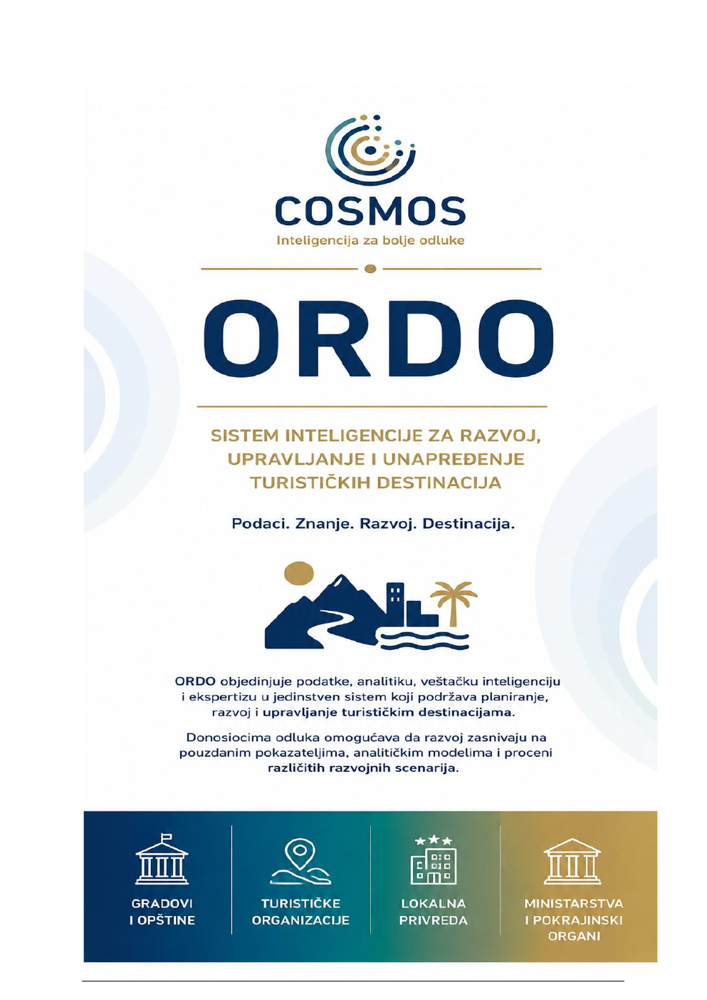

01 / Podaci
Polazna osnova
Prirodni resursi, turistički tokovi, privreda, tržište rada, infrastruktura i životna sredina.

Podaci. Znanje. Razvoj. Destinacija.
Sistem inteligencije za razvoj, upravljanje i unapređenje turističkih destinacija. Vizuelno koristi duboki navy, zlatni akcenat i geometriju „reda, poretka i sklada“.

ORDO posmatra destinaciju kao jedinstven razvojni sistem u kojem su priroda, prostor, ljudi, kultura, privreda, infrastruktura i institucije međusobno povezani. Cilj nije samo više posetilaca, već dugoročna vrednost za destinaciju i lokalnu zajednicu.
Prirodni resursi, turistički tokovi, privreda, tržište rada, infrastruktura i životna sredina.
Podaci dobijaju značenje kroz razvojne ciljeve, stručna saznanja i lokalni kontekst.
Pokazatelji i modeli otkrivaju veze između ekonomskih, društvenih, prostornih i ekoloških procesa.
AI proširuje analizu, dok ljudsko iskustvo i odgovornost ostaju nezamenljivi.
Na landing stranici arhitekturu treba predstaviti kao jasan linearni tok, ne kao tehničku šemu. Sedam koraka pokazuju kako se razvojni cilj prevodi u integrisano znanje, scenarije i strateške odluke.
Razvojna ambicija i očekivani rezultati.
Podaci o tržištu, prostoru, privredi i održivosti.
Merljiv i uporediv jezik razvoja.
Obrasci i uzročno-posledični odnosi.
Scenariji i procena mogućih efekata.
Jedinstvena razvojna slika.
Strategije, planovi i investicione odluke zasnovane na znanju.
ORDO detalj stranica treba da pokaže da razvoj destinacije povezuje konkurentnost, održivost, razvojnu inkluziju, zapošljavanje i kvalitet života lokalne zajednice.
Lokalni proizvođači, zanatlije, kreativne industrije, kulturne ustanove, porodična gazdinstva i preduzetničke inicijative ulaze u zajedničku razvojnu sliku.
Različiti razvojni pravci procenjuju se pre primene kako bi donosioci odluka razumeli njihove moguće posledice po destinaciju i zajednicu.